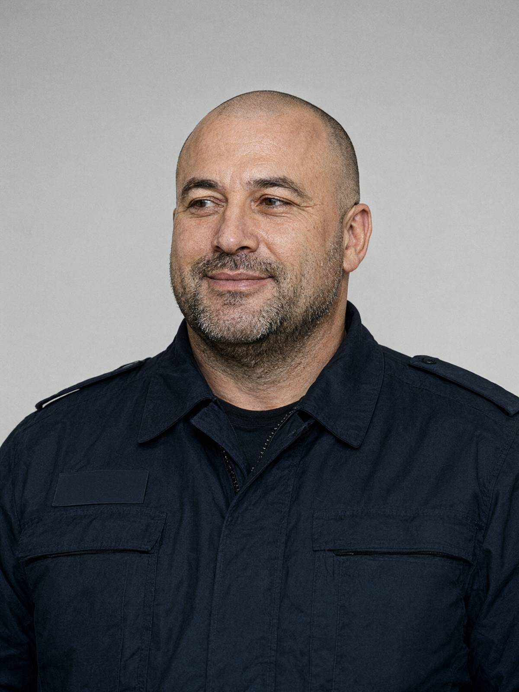

м. Івано-Франківськ, 16 жовтня 2026 року, 11:35–12:10
Місце: ЖК «Дем'янів лаз», вул. Пасічна, 41, приміщення поста охорони
Пояснення відібрав: майор поліції Волков Д.С., старший слідчий в ОВС СУ ГУНП в Івано-Франківській області, у кримінальному провадженні № 12026090010002417.
Особа, що дає пояснення: Дячук Руслан Михайлович, 19.04.1980 р.н., начальник служби охорони ТОВ «Лаз-Сервіс» (керуюча компанія ЖК «Дем'янів лаз»). Тел. +380 66 318 90 45.
Роз'яснення прав. Роз'яснено, що відповідно до ст. 63 Конституції України особа не зобов'язана давати пояснення щодо себе, членів своєї сім'ї та близьких родичів; пояснення дається добровільно. «Та знаю, знаю. Я сам колишній, капітан. Пишіть, товаришу майоре, я все розумію».
Питання: Розкажіть про вашу зміну 15–16 жовтня.
Зміна з двадцятої нуль-нуль п'ятнадцятого до восьмої нуль-нуль шістнадцятого. Заступив разом із Ліщуком Тарасом, молодий охоронець. Ліщука відпустив о 22:30 — у хлопця мама хворіє, а ніч була тиха. Каюся, не за інструкцією, але я ж теж людина. Далі був на посту один.
Питання: Чому не працювали камери?
Реєстратор глючить уже місяць. Канали 5–8 не писали десь з 23:10 до 01:30 — я це вже зранку побачив, як переглядав. Вночі на моніторі воно ніби показувало, а запису нема. Я зранку подав заявку в «Лаз-Сервіс» на ремонт. Скільки разів казав їм: купіть нормальну залізяку, а не китайську мильницю.
Питання: Де ви перебували з 23:00 до 01:30?
Я всю ніч сидів на посту. У пості є своя камера, на карту пам'яті, — віддаю вам запис, там видно. Її «Лаз-Сервіс» поставила, щоб охоронці не спали, — от і знадобилась. Там я весь час у кадрі. Хоч раз ця дурна камера на мою користь.
Гр. Дячук Р.М. добровільно передав флеш-накопичувач USB (Kingston, 32 ГБ) з копією запису з карти пам'яті камери поста охорони. Флеш-накопичувач упаковано й опечатано (пакет № 6). Огляд запису буде проведено окремо.
Питання: Чи бачили або чули ви щось підозріле вночі?
Нічого. Тихо. Пару машин мешканців заїхало, кур'єр приїжджав увечері, ще до одинадцятої. Пост у мене біля в'їзду, до баби звідси метрів сто п'ятдесят, через секції не почуєш.
Питання: Що ви можете сказати про мешканців будинку 41-А?
Скажу як колега колезі, не для протоколу… Ну, хай буде для протоколу. Той «онук» вічно лазить через діру в паркані, мутний. Ні роботи, ні документів, курить у нас на майданчику, мамочки скаржаться. Звідки він узявся, ніхто не знає. А баба самогон жене, до неї вночі всякі ходять. Брагою на весь двір тягне, мешканці скаржаться. Я на вашому місці подивився б у той бік.
Питання: Яким ви знали Палійчука Василя Івановича?
Нормальний мужик. Машину ставив де хотів, Маланюк через це мене задовбав: «Охорона, евакуюйте танк». А як я його евакуюю, він же інвестор. Здоровкалися, не більше. Царство небесне.
Питання: Пролом у паркані — давно?
Роки зо три. Маланюк пише скарги, «Лаз-Сервіс» обіцяє заварити. Люди ходять навпростець на Пасічну, всім зручно. Мені тепер, видно, догана буде.
Питання: Хто має доступ до реєстратора?
Реєстратор тут, у пості, під столом. Пароль знають охоронці зміни. Голова ОСББ Маланюк має застосунок на телефоні — дивитися камери наживо. Цей дивиться частіше, ніж ми.
Питання: Чи можете ви надати інші дані — журнал шлагбаума, ключі мешканців, чат будинку?
Без питань. Що в мене є — все дам, я ж розумію, як це працює. Експорт чату мешканців скину сьогодні, там люди все пишуть, хто що бачив. Журнали — через «Лаз-Сервіс», там юристи, але я підганю.
Під час розмови поводився впевнено, доброзичливо, кілька разів пропонував каву з термоса (відмовлено).
Зі слів записано вірно, мною прочитано. Зауважень не маю.